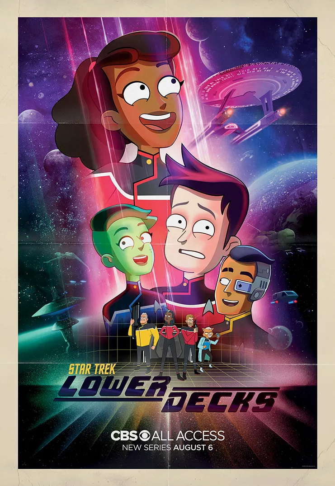

@c6reviews.
@c6reviews.
| Star Trek: Lower Decks | |
|---|---|
 |
|
| Abbreviation(s): | LOW, LD, or less-commonly LDS |
| Episodes: | 50 |
| Air dates: | Aug 6, 2020 – Dec 19, 2024 |
| In-universe years: | 2380 – 2382 |
| Universe Timeline Go to full timeline ➡︎ | |||
|---|---|---|---|
| 2363 | |||
| 2364 | Star Trek The Next Generation (TNG) |
||
| 2365 | |||
| 2366 | |||
| 2367 | Battle at Wolf 359 | ||
| 2368 | |||
| 2369 | Star Trek Deep Space Nine (DS9) |
||
| 2370 | |||
| 2371 | Star Trek VOYAGER (VOY) |
Generations | |
| 2372 | |||
| 2373 | First Contact | ||
| 2374 | |||
| 2375 | Insurrection | ||
| 2376 | |||
| 2377 | |||
| 2378 | |||
| 2379 | Nemesis | ||
| 2380 | Star Trek Lower Decks (LOW) |
||
| 2381 | |||
| 2382 | |||
| 2383 | Star Trek Prodigy (PRO) |
||
| 2384 | |||
| 2385 | Rogue Synth Attack on Mars (April 5) | ||
| 2386 | |||
Star Trek: Lower Decks is the tenth TV series to air, and only the second animated Trek series, after The Animated Series with the original cast in 1973. Lower Decks takes place in the 24th century, about two years after the end of Star Trek: Voyager. The show focuses on the antics of the low-ranking crew on the California-class USS Cerritos, and these lower-deckers are often not privy to everything that's happening on the missions their ship embarks upon. This series is at least partially inspired by the TNG episode TNG 7x15: Lower Decks, which focused on the lives of the low-ranking crew of the USS Enterprise‑D.
Now, I have to admit that Lower Decks is not my jam. I don't dislike it, it's just not my thing – and I know that's just a “me” thing, because the show is very popular. Still, I don't think the show ever really landed on what it wanted to be: a bona fide Trek offering or an unserious Trek self-parody. And so, it tried to do both in a balance that was... unpolished. As such, I found it very difficult to rate the individual episodes in this series. With so many callbacks to previous Trek, I wondered how I might rate this show on its own merits, pretending that I had never seen any Star Trek shows before. That would, at least, eliminate the tendency to rate certain episodes higher just because they contain more fan service.
However, I quickly determined that I'd likely be unable to fully dismiss every show I've already watched, and that this show should be rated as much on its own originality as its ability to successfully incorporate references to previous shows. Overall, I don't think the show went far enough in taking advantage of its format, its ability to bring back beloved actors in voice, and its comedy genre as a vehicle to follow-up on perhaps some unintentionally-silly choices from previous Trek shows. And as for trying to be its own thing, I think Lower Decks fell a bit short there, too. They did introduce some memorable and enjoyable recurring characters like Badgey and Peanut Hamper, and they tried to add some additional new mythos to the universe in the form of the “black mountain” and the Koala entity... but then in their fifth and final season, they swept all that off the table and forgot about it, leaving those threads without a satisfying conclusion. I think the most interesting story thread was the one about Rutherford's implants, but that was wrapped up at the end of Season 3.
The show's half-hour episode runtime and short 10-episode seasons leaves this entire series with less material than a single season of its 24th-century predecessors. Considering that and its other shortcomings – while this show definitely gave me some good laughs along the way and it does have its merits – I just don't think that this series lives up to its potential.
Never really struck the right balance of legitimacy versus parody.
What to watch next:
Next show to air and next chronological story
Star Trek: Prodigy was the next to be released, just after Lower Decks' second season. It's also the next show in the Trek timeline, taking place the year after Lower Decks' fifth and final season.
More Animated Series
If you want to stick with animated shows, continue in the timeline with Star Trek: Prodigy, or maybe now's a good time to go all the way back to Kirk's adventures in Star Trek: The Animated Series.
Something Live-Action
If you want a break from animated series, Lower Decks makes a TON of references to previous 24th-century Trek shows like Star Trek: The Next Generation, Star Trek: Deep Space Nine, and Star Trek: Voyager. Maybe you'd like to check out one of those!
Lower Decks Spoiler Policy
- With this series, I have been a bit more lax about some of the episode descriptions, which may reveal some content of the episode, but I have not spoiled any “big” reveals.
- However, as always, reading an episode review may spoil something from a previous episode.
- Blatant spoilers will be obscured, with a "Spoiler" tag that you can click on to reveal the contents. Don't read the spoiler unless you've seen the episode. Try it here: Spoiler » This is a spoiler!
Understanding Ratings and Recommendations
Everyone has different tastes and opinions, and my opinions certainly aren't always popular. To help combat that, a "final score" on any episode is an average of my rating and the ratings from 2 or 3 other independent sources, including IMDb. Though, my rating is weighted a little higher in that calculation, because this is my website, after all.
Episode Scores
| Episode Rating | Rating Value Range | Description |
|---|---|---|
| My rating |
★☆☆☆☆ ★★☆☆☆ ★★★☆☆ ★★★★☆ ★★★★★ |
|
| SF Debris rating | 0–10 |
|
| Ex Astris Scientia rating | 0–10 |
|
| Normalized IMDb rating |
0–10 converted from 6.9–8.9 |
|
| FINAL SCORE | 0–10 |
|
Additional Awards
| Award | Description | |
|---|---|---|
| ♥︎ | Personal Favorite | This is a purely subjective distinction that indicates an episode that I just particularly like, and there is no accounting for taste. |
O 🥇 |
1st place (originality) |
I had to split the usual 1st, 2nd, and 3rd place awards into two different categories. This category awards the best episodes that stand on their own original storylines and merits. |
O 🥈 |
2nd place (originality) | |
O 🥉 |
3rd place (originality) | |
FS 🥇 |
1st place (fan service) |
I had to split the usual 1st, 2nd, and 3rd place awards into two different categories. This category awards the best episodes that rely heavily on fan service and past Trek material for their success. |
FS 🥈 |
2nd place (fan service) | |
FS 🥉 |
3rd place (fan service) | |
Reference Meter
1️⃣️⬛️⬛️⬛️⬛️ 🟦️2️⃣️⬛️⬛️⬛️ 🟦️🟦️3️⃣️⬛️⬛️ 🟦️🟦️🟦️4️⃣️⬛️ 🟦️🟦️🟦️🟦️5️⃣️
The Reference Meter measures how much content there is in the episode that references or reminds us of previous shows.
A low number indicates very few references to previous Trek, while a high number indicates many references and easter eggs in the episode.
This meter also has a ⭐️ Guest Star Bonus! when the episode includes the voice of a previous Star Trek actor reprising their role!